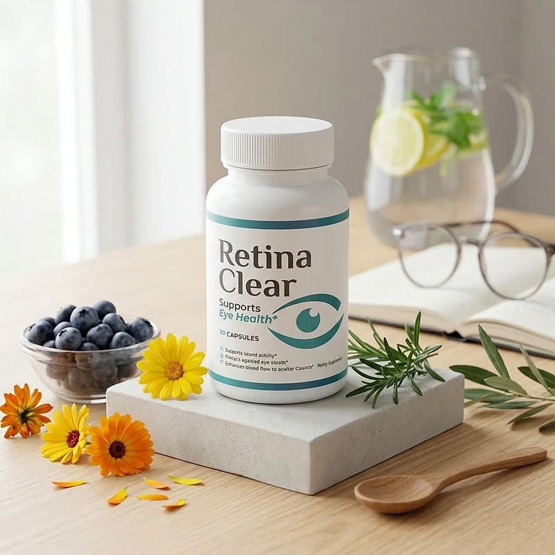
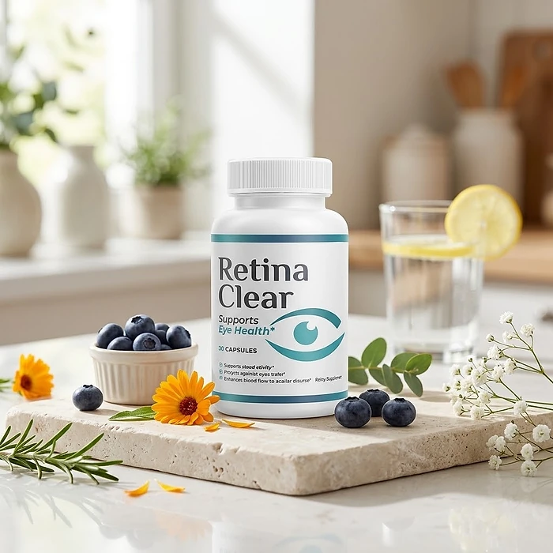
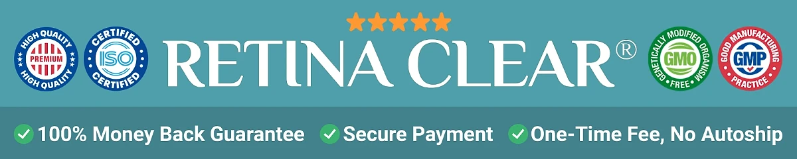

What Is Retina Clear And How Does It Work?
Retina Clear is a dietary supplement in capsule form designed to support healthy eyes, visual clarity, and comfort during long days of screens and reading for adults who want to address the tired eyes, strain, and blurry moments that can build up with age and modern routines through a natural, convenient approach — without complicated protocols or temporary quick fixes.
According to the product label, Retina Clear supports eye health, supports visual clarity, protects against eye strain, and enhances blood flow to ocular tissues. The official order page presents it with a 60-day money-back guarantee and an average customer rating of 4.8.
The scientific references listed below the official video focus on nutrients such as astaxanthin, lutein, zeaxanthin, N-acetyl cysteine, and eyebright, which are well known in eye health research, particularly for people who prefer one simple daily capsule over multiple products or complicated plans.
Rather than acting as a short-lived fix like eye drops, Retina Clear focuses on supporting the eyes from within, working gradually alongside regular eye exams, screen breaks, and good lighting to help maintain comfortable, clear vision over time.
With consistent daily use, a formula of this kind is intended to support less eye fatigue, more comfortable focus, and greater confidence in daily activities, especially when combined with a diet rich in colorful vegetables, enough sleep, and protection from bright light.
From a practical standpoint, Retina Clear is a daily eye health capsule — there is nothing to mix or measure, and a bottle fits easily on a desk or kitchen counter.
It is a dietary supplement, not an eye treatment, and it does not replace glasses, prescribed care, or visits to an eye doctor. The official website does not publish the list of ingredients or the label, so anyone who wants to check the formula should look at the Supplement Facts panel on the bottle or ask customer support before ordering.
Retina Clear Side Effects
Retina Clear is presented by the official website as a dietary supplement designed for adults who are looking for a simple, natural approach to eye health, especially those who prefer an easy daily capsule over complicated routines or multiple products.
The quality seals shown on the official order page include FDA, GMP, and NSF badges, which point to a product made under recognized manufacturing standards, reinforcing consistency, safety, and reliability.
There are no widespread reports of serious side effects. Because the official website does not list the ingredients, it is not possible to point to specific interactions, so the safest approach is to read the Supplement Facts panel on the bottle before starting. Sudden changes in vision, eye pain, flashes of light, or a curtain over the field of vision need prompt evaluation by an eye doctor. It is not intended to diagnose, treat, cure, or prevent any disease, and individual results may vary.
Pregnant or nursing women, people under 18, and anyone with a medical condition or taking prescription medication, including blood thinners, should consult a physician before using Retina Clear, ensuring it fits safely within their personal wellness plan, and should keep their regular eye exams.
Retina Clear Dosage
Each bottle of Retina Clear contains 30 capsules, which points to a one-capsule-a-day routine lasting about a month. The official website does not publish the suggested use, so the directions printed on the label are the reference to follow.
Formulated as an easy daily capsule, it requires no powders to mix, no drinks to prepare, and nothing to measure. Taking it at the same time each day, with a glass of water and a meal, makes the routine easy to remember and allows its ingredients to work consistently.
For best results, consistency is key. Eye health support builds gradually, so many people make it part of an ongoing wellness routine rather than a short trial, and the official packages cover one, three, or six months.
There is no need for complex schedules or multi-step routines. One simple daily habit is designed to build support gradually alongside regular screen breaks, good lighting, sunglasses outdoors, and a diet rich in leafy greens and colorful vegetables.
As with any dietary supplement, it's important not to exceed the recommended dose and to check the label on your bottle. Retina Clear works best when used regularly, combined with proper hydration, balanced nutrition, and healthy daily habits.
Retina Clear – Refund Policy
You can order Retina Clear with confidence, knowing that every purchase is protected by a 60-day, 100% money-back guarantee. This allows you to try the product and decide if it delivers the support you expect.
According to the refund policy on the official website, if for any reason you are dissatisfied at any time during the first 60 days after purchase, you can call or email support to request a refund. You pay the return shipping and send any unused bottles to RetinaClear, 19655 E 35th Dr #100, Aurora, CO 80011, USA.
How the refund process works: Contact customer support by phone or email to request your refund, then ship any unused bottles to the return address. Once the refund is processed, you will receive an email confirming that it is complete. Sharing the reason for the return is optional and not required to get your refund.
Customer Support Contact Information: 1-888-698-0597 (7AM to 9PM, 7 days a week) or support@getretinaclear.com, as listed on the official website. According to the contact page, phone calls are answered by a live agent within a few minutes, and emails within 24 hours or less.
Refund Processing Time: According to the policy, refunds take 5 to 7 business days to appear on a credit card and 5 to 10 business days on a debit card, depending on your bank.
This refund policy is designed to give customers a clear and transparent experience when trying Retina Clear, with a published return address and support available every day of the week.
Retina Clear – Where To Buy
Retina Clear is sold through its official website, so if you decide to try it, it's important to be careful about where you purchase it. The official website is the only sales channel the manufacturer lists, and it does not point to marketplaces such as Amazon, eBay, or Walmart.
Listings on third-party platforms may look similar but cannot be verified as authentic, raising concerns about safety, quality, and ingredient freshness. Products purchased outside the official source may not be covered by the money-back guarantee.
For this reason, it makes sense to purchase Retina Clear only through the official website. Buying directly from the official source ensures you receive the authentic original product, with access to customer support and the full guarantee. Orders placed there go through a secure checkout, and the return and contact pages are linked at the bottom of the official page.
To avoid counterfeit batches and ensure maximum quality, always verify that you are ordering from the official Retina Clear website before completing your purchase.
To ensure you’re getting the authentic product, most users choose to visit the official website.
Is Retina Clear A Scam?
Based on what the official website discloses, Retina Clear appears to be a real product: an eye health capsule sold through an established retailer (BuyGoods), with a published refund policy, a return address, and customer support by phone and email. It is designed to support visual clarity and eye comfort as part of a consistent routine.
The main point of attention is transparency about the formula. The label lists the benefits, but the official website does not name the ingredients and does not publish the label or the suggested use; the references below the video only suggest which nutrients may be involved. Before ordering, it is worth asking customer support for the full ingredient list.
On the other hand, the support details are clear: a toll-free phone line open from 7AM to 9PM every day, an email address with a reply promised within 24 hours, and a physical return address in Aurora, Colorado, with a focus on customer service and simple returns. Careful readers should also know that the video headline makes strong promises about restoring vision, and that the footer still mentions ClickBank although orders are processed by BuyGoods.
The official website shows an average customer rating, but it publishes no written testimonials with names, so this review does not quote any. Results vary from person to person, and no supplement replaces glasses, prescribed treatment, or regular visits to an eye doctor.
Retina Clear is backed by a 60-day, 100% money-back guarantee, and the refund rules, including the return address and the processing times, are published on the official website, which underscores the company's commitment to customers.
If you're looking for a simple daily capsule to support eye health and visual comfort without complicated routines, Retina Clear is worth considering — especially when purchased directly from the official website.
For those who want to verify product details or check current availability, the official Retina Clear website remains the safest option.

Check Availability On Official Website
